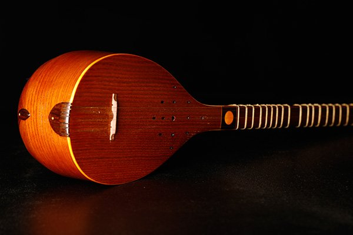

سهتار
سهتار از سازهای زهی و مضرابی موسیقی ایرانی است که با ناخن انگشت اشارهٔ دست راست نواخته میشود. این ساز، دارای ۴ سیم از جنس فولاد و برنز است که به موازات دسته، از کاسه تا پنجه کشیده شدهاند. سهتار دارای ۲۸ پردهٔ قابل حرکت از جنس رودهی حیوانات یا ابریشم است. صدای آن ظریف و تو دماغی و تا حدودی غمگین است و گستره صوتی آن از هنگامِ بمِ دو زیر خط حامل تا لا بمل بالای خط حامل و در نتیجه نزدیک به ۳ اکتاو است.
سهتار پیشتر همخانواده با سازهایی چون دوتار و تنبور بودهاست و امروزه به تار بسیار نزدیکتر است. در موسیقی دستگاهی ایران استفاده از سهتار بسیار رواج دارد؛ گرچه بیشتر برای تکنوازی مورد استفاده قرار میگیرد. این ساز برای هر دستگاه کوک ویژهای دارد ولی فاصلهٔ چهارم یا پنجم پایین رونده معمولاً بین سیمهای اول و دوم ثابت است.
نوازندگان سهتار برای اجرای آن، در حالت نشسته روی زمین یا صندلی، کاسهٔ ساز را به صورت مورب و با زاویهٔ ۴۵ درجه روی ران راست قرار داده و با سر انگشتان دست چپ روی پردهها (دستانها) ی روی دستهٔ سهتار حرکت میکنند و با انگشت اشارهٔ دست راست خود به سیمها ضربه میزنند. معمولاً برای نوازندگی فقط انگشتان اشاره، میانی، حلقه و در بعضی موارد انگشت کوچک دست چپ استفاده میشوند اما در آثار استادان، استفاده از انگشت شست برای پردهگیری روی سیم بم نیز کاربرد دارد. در آموزش سنتی تار و سهتار، انگشت چهارم مورداستفاده نیست مگر به جای انگشت سوم، همچنین استفاده بیش از حد از آن، باعث تنبلی انگشت سوم میشود. انگشتی که برای یک نت معرفی میشود دربرگیرنده شش نت است، سه نت سیم سفید، سه نت هم سیم زرد.
پس اگر نتها در داخل این شش نت قرار دارند حرکت دست جایز نیست. انگشت اول مجاز به حرکت است و انگشتهای دوم و سوم مجاز به حرکت نیستند مگر سکوت لازم بین دو جمله وجود داشته باشد. در حین نوازندگی سهتار، میتوان با زخمهزدن نزدیک به خرک، صدا را کمی زبر و خشن کرد؛ و با انجام این کار نزدیک به گلوی ساز، صدایی نرم و ملایم و اصطلاحاً پختهتر تولید میشود.
تاریخچه سهتار
سهتار از خانوادهٔ تنبور است اما امروزه از نگاه روش نواختن و شکل دسته و تکنیکها بسیار به تار نزدیک است. سهتار در گذشته سه سیم (تار) داشته و اکنون چهار سیم دارد که سیم سوم و چهارم آن نزدیک به هم قرار دارند و همزمان نواخته میشوند و مجموعهٔ آن دو را معمولاً سیم «بم» مینامند. با گذشت زمان کسانی چون ابونصر فارابی، ابوعلی سینا، صفی الدین ارموی و از متأخران ابوالحسن خان صبا لزوم افزایش یک سیم دیگر به این ساز را درک کرده و سهتارهای امروزی دارای چهار سیم هستند.
این سیم از نظر تاریخی چهارمین سیمیاست که روی ساز قرار گرفته، ولی در ترتیب قرارگیری سیمها از پایین به بالا سیم سوم است. سیم سوم سه تار به سیم مشتاق معروف است و به روایتی از ابوالحسن صبا این سیم را نخستین بار درویشی به نام مشتاق علی شاه به این ساز افزودهاست. صدای این ساز برای نخستین بار در سال ۱۳۰۶ با اجرای پروانه ضبط شد.
ساز سهتار به علت ویژگی صوتی خاص خود و صدای ظریفش، همواره مورد توجه صوفیان بودهاست.

اجزا سهتار
ساز سهتار دارای دو قسمت کاسه و دسته است. خرک روی صفحه و سیمگیر در انتهای کاسه قرار دارد بهگونهای که اگر ساز ایستاده روی زمین باشد سیمگیر با زمین در تماس خواهد بود. در انتهای دسته پنجه قرار دارد که محل قرارگرفتن گوشیها یا ابزارهای تنظیم کوک است. سهتار در مقایسه با تار فاقد جعبهٔ گوشی است و گوشیها روی سرپنجه سوار شدهاند و داخل آن نیستند.